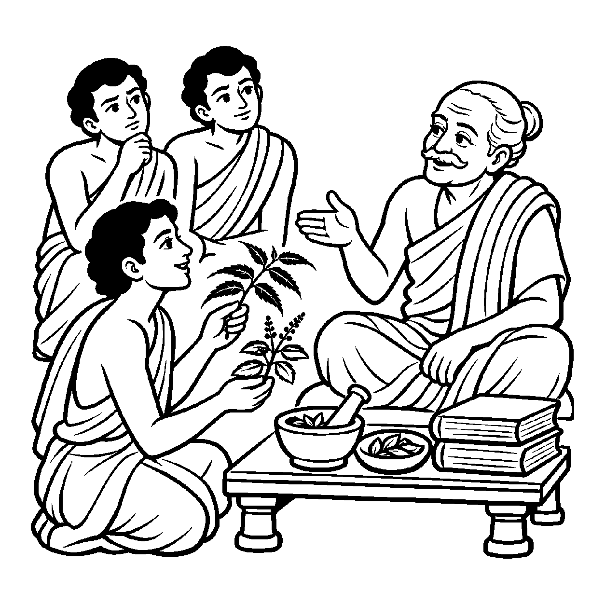

એક સુંદર ઉપવનમાં લાલ ગુલાબ, શ્વેત ચમેલી, સુવર્ણવર્ણી ચંપો અને નીલકમળ ખીલેલાં છે. જો કોઈ માળી એમ કહીને બધાને એક સરખા માને કે "આ બધું કેવળ વનસ્પતિ જ છે", તો તે ભૂલ કરશે; કારણ કે ગુલાબની કોમળ સુવાસ ગુલાબમાં છે અને ચંપાની તીવ્ર માદકતા ચંપામાં છે! તેવી જ રીતે એક વૈદ્ય જ્યારે ઔષધિઓ ભેગી કરે છે ત્યારે તે સર્વમાં વનસ્પતિપણું જોતો નથી, પણ કઈ વનસ્પતિ પિત્ત શમાવે છે અને કઈ વાયુ મટાડે છે તે વિશેષ ગુણધર્મ જુએ છે. સામાન્ય સત્તા હોવા છતાં, પ્રત્યેક પદાર્થના ગુણ, કાર્ય અને ક્ષણ-ક્ષણનો પર્યાયમાં જે વિશિષ્ટ ભેદ અને અનોખાપણું રહેલું છે, તેને બારીકાઈથી ઓળખતો દ્રષ્ટિકોણ એટલે 'વિશેષનય'.
આત્મા સામાન્ય દ્રષ્ટિએ શુદ્ધ ચૈતન્ય છે, છતાં વિશેષ દ્રષ્ટિએ જોતાં જ્ઞાનગુણનું કાર્ય જાણવાનું છે, દર્શનગુણનું કાર્ય સામાન્ય અવલોકન છે અને ચારિત્રનું કાર્ય સ્થિરતા છે. તેમજ વર્તમાનમાં કોઈ જીવ સંસારી નર છે, કોઈ દેવ છે તો કોઈ વીતરાગ મુનિ છે. વિશેષનય આ પર્યાયગત ભેદોને ઓળખીને સાધનામાં ક્યાં શું સુધારવું તે માર્ગદર્શન આપે છે.
આ નય સાધકને પોતાના દોષો અને ગુણોની ચોક્કસ પરખ કરાવી આત્મશુદ્ધિના પરમ મુકામ સુધી દોરી જાય છે.
પુષ્પ અનેક બગીચામાં, નોખી સહુ સુવાસ;
વિશેષનયથી પરખતાં, ગુણનો થાય પ્રકાશ.
પર્યાયોના ભેદ લહી, સાધે આતમ કાજ;
વિશેષ જાણી પૂર્ણ થતાં, પામે શિવ સામ્રાજ્ય.
સાધકને પોતાના દોષો અને ગુણોની ચોક્કસ પરખ કરાવી આત્મશુદ્ધિના પરમ મુકામ સુધી દોરી જાય છે.

ધન્વંતરિ નગરમાં એક વૃદ્ધ રાજવૈદ્ય પાસે ત્રણ યુવાન શિષ્યો આયુર્વેદનું જ્ઞાન લેતા હતા. શિક્ષણ પૂર્ણ થતાં ગુરુએ પરીક્ષા માટે કહ્યું: "જંગલમાં જાઓ અને કોઈ એવી વનસ્પતિ લાવો જે સંપૂર્ણપણે નકામી હોય." બે શિષ્યો આખો દિવસ ફરીને ખાલી હાથે પાછા આવ્યા અને બોલ્યા: "ગુરુજી! સામાન્ય દ્રષ્ટિએ બધી વનસ્પતિ સમાન છે, કોઈ પણ સાવ નકામી નથી." પરંતુ ત્રીજો શિષ્ય દેવદત્ત વિચારમાં પડી ગયો: "જો બધી વનસ્પતિ સમાન હોય તો પછી રોગ અનુસાર ચોક્કસ ઔષધ કેમ આપવું પડે છે? પ્રત્યેક તત્ત્વની આગવી વિશેષતા શું છે?" દેવદત્તના અંતરમાં પ્રત્યેક પદાર્થના વિશિષ્ટ ગુણ અને કાર્યને ઓળખવાની તીવ્ર જિજ્ઞાસા જાગી.
દેવદત્ત જંગલમાં ઊંડે સુધી ગયો. તેણે દરેક છોડનું મૂળ, પાન અને રસ ચાખીને ચકાસ્યું. તેણે જોયું કે કડવો લીમડો તાવ ઉતારે છે અને મીઠી તુલસી કફ મટાડે છે. તે પાછો આવ્યો અને ગુરુને નમીને બોલ્યો: "ગુરુજી! સામાન્ય સત્તાની રીતે ભલે સહુ વનસ્પતિ હોય, પણ વિશેષનયની દ્રષ્ટિએ પ્રત્યેક છોડમાં એક અનોખો, અદ્વિતીય ગુણ રહેલો છે! કોઈ છોડ વિષ છે તો કોઈ અમૃત છે." રાજવૈદ્યે પ્રસન્ન થઈને કહ્યું: "તેં સત્ય પકડ્યું, દેવદત્ત! સામાન્યથી એકતા સમજાય છે, પણ વિશેષનયથી કાર્ય સિદ્ધ થાય છે! સાધનામાં પણ તારે પોતાના ક્રોધ, માન કે માયાના વિશિષ્ટ દોષોને અલગ અલગ ઓળખીને તેમને દૂર કરવા પડશે." દેવદત્તને વિવેક પ્રગટ્યો. તેણે પોતાના ચિત્તના એક-એક ભાવનું સૂક્ષ્મ નિરીક્ષણ કર્યું, સર્વ દોષો શાંત કર્યા અને તેનું અંતઃકરણ સહજ શાંતિમાં ડૂબી ગયું.
જો જીવ કેવળ ભેદો અને વિશેષતાઓમાં જ અટવાઈ જાય અને મૂળ એકરસ આત્મદ્રવ્યને ભૂલી જાય, તો તે રાગ-દ્વેષ અને કલેશના વમળમાંથી કદી બહાર નીકળી શકતો નથી. શબ્દો કે વ્યાકરણના બાહ્ય નિયમોમાં જ અટવાઈ રહેવાથી અંતરંગ ભાવશુદ્ધિ ખોવાઈ જાય છે અને જીવ શુષ્ક વાદવિવાદ કે જડ ક્રિયાજડતામાં સબડતો રહે છે.
આ નય પ્રત્યેક ગુણ અને અવસ્થાની વિશેષતા ઓળખાવી સાધનાને વ્યવસ્થિત બનાવે છે, જેથી સાધક હું-પણાને ખોઈને પોતાના આત્મસ્વરૂપમાં સ્થિર થાય છે. તે વાણી અને સંજ્ઞાઓને આત્મજ્ઞાનનું સાધન બનાવી સાધકને નિર્વિકલ્પ અનુભૂતિ તરફ દોરી જાય છે, જેથી ચેતના પોતાના આત્મસ્વરૂપમાં સ્થિર થઈ શાંતિ અનુભવે છે.